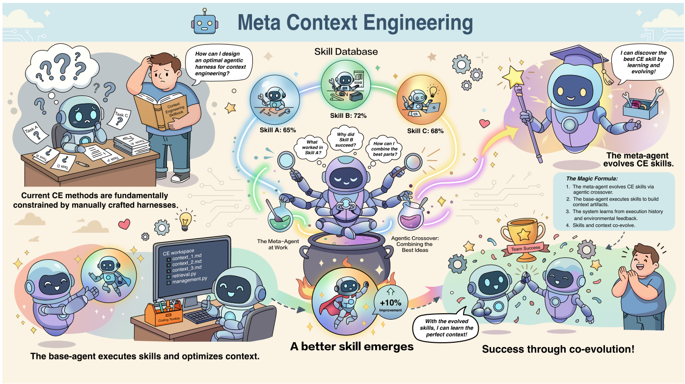
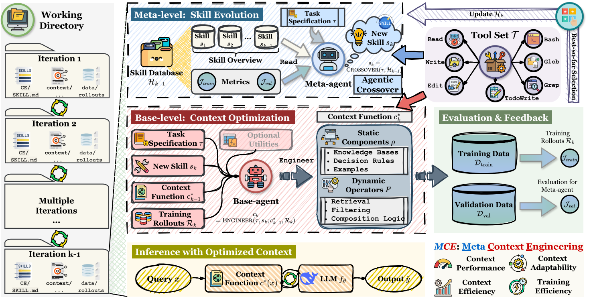
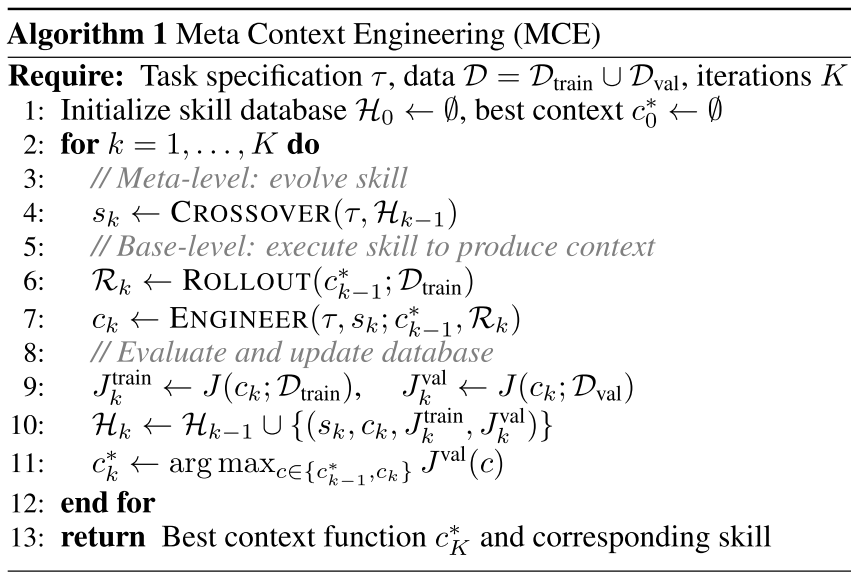

Meta Context Engineering via Agentic Skill Evolution论文阅读笔记
Introduction
Context Engineering局限性
大语言模型的实际表现，很大程度上取决于它在推理时看到的上下文。随着 LLM 从单一聊天模型发展为由工具、文件系统、多个智能体组成的复合系统，如何组织、更新、检索和压缩上下文，已经成为提升模型能力的重要瓶颈。这就是 Context Engineering, CE（上下文工程） 的研究对象。
但现有 CE 方法的问题在于：它们大多依赖人工设计好的固定框架。例如：
- 有些方法把经验保存为轨迹案例，但这种方式细节丰富却泛化差；
- 有些方法把经验总结为条目列表，但结构太平；
- 有些方法使用图结构记忆，但延迟高，且不一定比简单检索更好；
- 一些 prompt rewriting 方法偏向生成简短抽象规则，容易缺少深层领域细节；
- 一些 additive curation 方法偏向不断追加内容，容易导致上下文膨胀、噪声增加和局部更新失控。
作者认为，问题不只是上下文本身怎么写，而是“设计上下文的方法”也应该被学习和进化。MCE 的关键变化是：把“上下文工程流程”本身表示成一个可进化的 skill。元智能体负责不断改进这个 skill；基层智能体根据 skill 去读取训练反馈、生成上下文文件、写代码和更新检索逻辑。本文工作的概念图如下，图中也演示了这种概念，即双层优化 (内层优化上下文，外层优化产生上下文的方法)。

Agentic Context Engineering思路
作者指出，现有最先进的上下文工程方法依赖人工设计的 agentic harness，也就是固定的智能体工作流。这些系统通常会让模型通过探索、反思、更新上下文的循环来积累经验，但上下文结构和更新方式是预先规定好的。
作者认为没有任何一种固定 harness 能适用于所有任务。不同任务需要不同上下文结构：例如金融实体识别可能需要细粒度规则和错误模式总结；医学分类可能只需要相似病例示例；安全分类可能更需要简短、明确的判断边界；化学反应预测可能需要大量领域规则和反应类型知识。
因此，Meta Context Engineering (MCE) 的设计受到两个趋势启发：
- 智能体系统正在从固定多智能体流程，转向更统一、更自主、更可自循环的架构。任务特异性不再写死在系统流程里，而是封装到 agent skills 中；
- 代码工具和文件系统已经成为现代智能体的重要能力。文件和代码具有足够高的表达能力，可以表示知识库、检索器、分类规则、评估脚本、上下文组合逻辑等。因此，MCE 把上下文表示为文件和代码，而不是固定的列表或 prompt。
此外，作者也提出，在 agent skill level 进行 agent 的优化的表达力远比 prompt 要好，因为 Skill 可以包含：
- 自然语言方法说明；
- Python 脚本；
- 检索函数；
- 规则文件；
- 错误分析器；
- 验证函数；
- 上下文模板。
Skill 更像一个小型上下文优化系统，而不是只是一句提示词。
Meta Context Engineering (MCE)
1.Problem Formulation
1.1.上下文函数定义
定义一个上下文函数：，它把每个输入查询 映射成对应上下文。这个上下文函数由两部分组成：
- 表示静态组件，例如系统提示、知识库、代码库、示例、规则文件；
- 表示动态操作符，例如检索、选择、过滤、格式化、组合。
也就是说，这里的上下文函数不是固定文本，而是经过一串操作动态生成的，包括静态组件和动态组件。
1.2.Context Engineering的目标
文中将 CE 的目标定义为：
也就是找到最优上下文函数 ，使任务目标 最大。对于监督学习任务而言，；对于强化学习任务而言，。
1.3.MCE 的双层优化目标
对于 MCE 而言，不直接优化上下文函数，而是引入一个 skill 。这个 skill 是一个可执行规范，定义了上下文函数应该如何表示、如何从训练数据中学习、如何更新。
给定 skill ，base-agent 会执行它并得到一个上下文函数。MCE 要解决的是双层问题，其 framework 如下图所示，分为 meta-level skill evolution 和 base-level context optimization 两部分。

- 内层：在给定 skill 的情况下，找到训练集表现最好的上下文函数 ；
- 外层：找到一个 skill ，使由它学出来的上下文函数 在验证集上表现最好。
即：
相当于传统的 CE 直接调用Prompt，而 MSE 则先自动学习“怎么调 prompt、怎么组织上下文、怎么写检索器、怎么压缩经验”，再用这个学到的方法去调 prompt/context。
2.Meta-Level: Agentic Skill Evolution
在第 轮迭代时，meta-agent 会维护一个技能数据库 。这个数据库记录了之前所有轮次的 skill、这些 skill 生成的上下文函数，以及它们在训练集和验证集上的表现。可以表示为：
然后 meta-agent 执行 agentic crossover，也就是智能体式交叉操作，根据任务说明 和历史技能数据库 生成新的 skill ：
这个过程中，meta-agent 主动阅读历史 skill 文件、上下文文件、训练结果和验证结果，判断哪些设计有效、哪些失败，然后组合出一个更好的 CE skill。
3.Base-Level: Fully Agentic Context Optimization
给定 meta-agent 生成的 skill ，base-agent 会执行这个 skill 来产生上下文函数。它的工作空间包括：
- 当前 skill ；
- 上一轮最优上下文函数 用于 warm-start；
- 训练集上的执行反馈 ，包括输入、模型输出和评估结果；
- 可选的外部 AI 模型调用工具。
base-agent 的目标是根据当前 skill 和训练反馈，更新上下文函数 。
4.Algorithmic Orchestration

梳理一下总的MCE算法流程：
- 1、初始化技能数据库 和最优上下文
- 2、每一轮 ：
- meta-agent 根据任务和历史技能执行 crossover，生成新 skill ；
- 用当前最优上下文 在训练集上 rollout，得到反馈 ；
- base-agent 执行 skill，生成新上下文 ；
- 在训练集和验证集上评估 ；
- 把本轮 skill、context 和指标加入历史数据库；
- 在 和 中选择验证集表现更好的作为新的最优上下文：。
实验
实验部分结果显示，MCE 的上下文更像是可迁移的领域知识和决策规则，而不是只针对某个模型错误的补丁。这对实际应用很重要，因为我们希望用强模型生成高质量上下文，再迁移给便宜的小模型使用。
详细的实验细节可自行查看原文。
参考资料